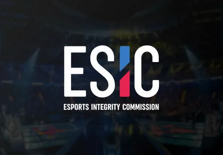
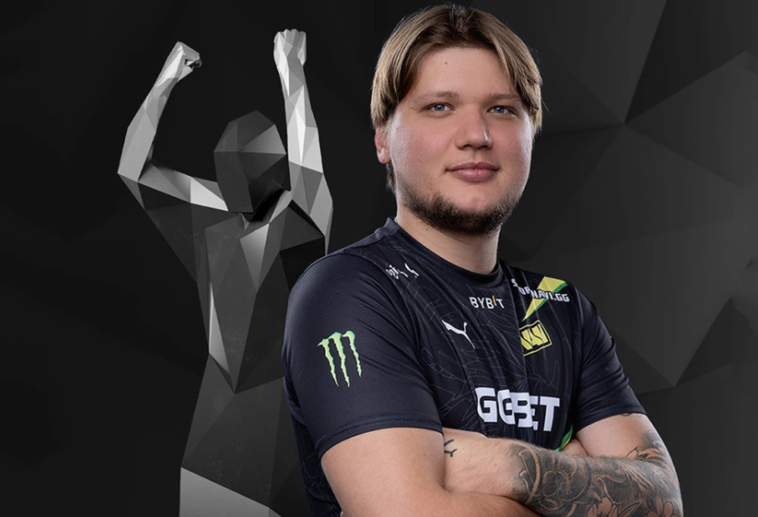
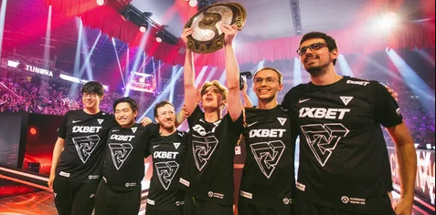
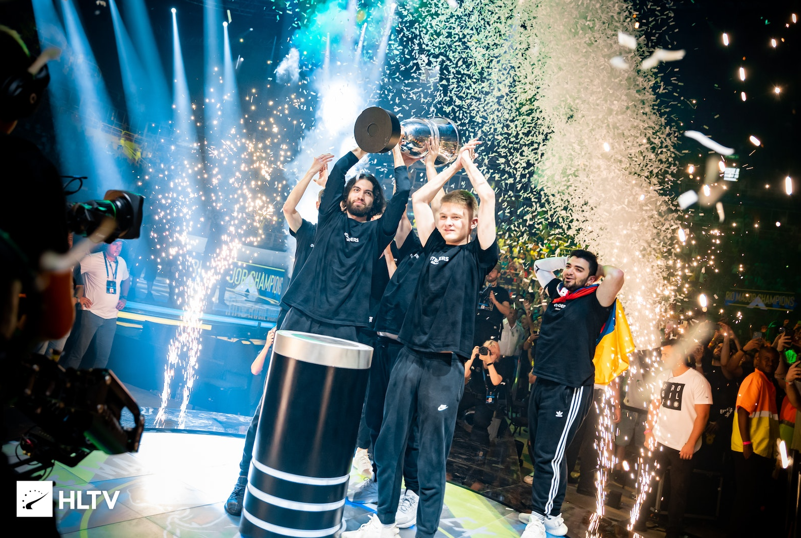
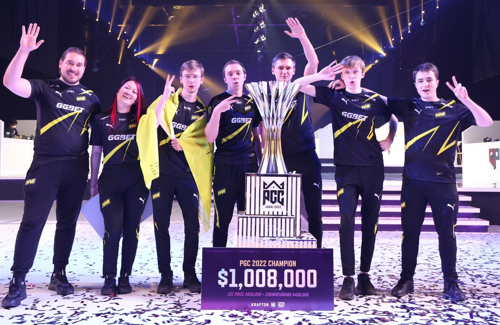

После окончания главных турниров в 2021 году у многих команд произошли изменения. В том числе и у турнирных организаций поменялся подход к проведению соревнований. Несмотря на ошеломительный успех СНГ региона в крупных чемпионатах, после событий 24 февраля многие организаторы решили сделать запрет на участие российских игроков в турнирах. Многие киберспортивные организации переехали в соседние страны. Из-за этого наш регион пошёл на спад по игре, и в течение года почти не завоёвывал призы. Однако, пожалуй, самым громким инфоповодом стала дискуссия вокруг ESIC и её работы над справедливостью в матчах.
Бывший сотрудник ESIC Алексей "Yarabeu" пришёл на стрим к Константину «leniniw» Сивко и рассказал, как киберспорт тонет в 322. По ходу трансляции он даже назвал имена и команды, которые, по его мнению, замешаны в нечестной игре. Он рассказал, что Комиссия по добросовестности в киберспорте на самом деле не сильно заинтересована в очистке CS:GO от договорных матчей: компания хочет только подключать новых букмекеров к собственной системе безопасности и получать от них деньги. Ранее Алексей был сотрудником букмекерской конторы, а после переключился на организацию договорных матчей. В основном он работал на украинском рынке — по его признанию, в его «списках» около сотни человек. В какой-то момент "Yarabeu" решил отказаться от 322 и заняться очисткой киберспорта — так он попал в ESIC, где проработал три месяца и разочаровался в идеалах комиссии. В первую очередь Алексей рассказал о самом свежем случае нечестной игры, известном ему. По информации "Yarabeu", филиппинская команда Polaris играла 322 в квалификации последнего шанса на The International 2022 по Dota 2. А в CS:GO под подозрением — снайпер команды Team Spirit "w0nderful", "Woro2K" и даже "degster".
После данного случая отношение к ESIC со стороны комьюнити всего киберспорта резко изменилось с нейтрального на негативное.
Несмотря на плохой старт в начале года и ситуацию вокруг ESPORTS INTEGRITY COMMISSION, год всё же выдался весьма интересным во всех направлениях киберспорта. Если последние 5 лет победители чемпионатов уже заранее были определены, то сейчас абсолютно каждый смог побороться за звание чемпиона мира. Таким образом, в CS:GO звание Major-Champion смогли заслужить команды FaZe Clan и Virtus.pro (из-за санкций - Outsiders). Последние - игроки из России и Казахстана, которых совершенно не ожидали в сетке плей-оффа. Помимо этого, СНГ-команда Tundra Esports смогла повторить подвиг команды Team Spirit и подняла трофей The Intarnational 2022 по Dota 2, а коллектив из Na'Vi по PUBG победил в чемпионате мира. В этом году мы по-прежнему являемся самым сильным регионом.
   